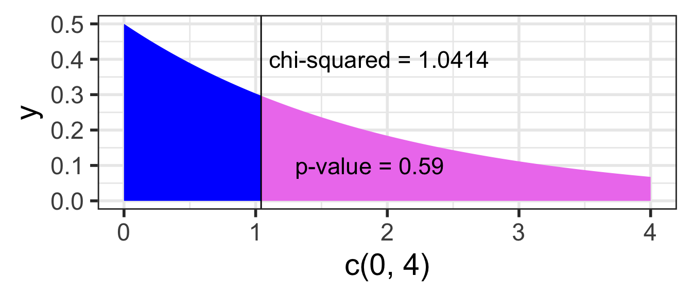

DRAFT - Day 17: Chi-squared tests (Sections 8.3-8.4)
BSTA 511/611
Week 8
Author
Affiliation
Meike Niederhausen, PhD
OHSU-PSU School of Public Health
Published
November 13, 2023
MoRitz’s tip of the day
Add text to a plot using annotate():
ggplot(NULL, aes(c(0,4))) +# no dataset, create axes for x from 0 to 4geom_area(stat ="function", fun = dchisq, args =list(df=2), fill ="blue", xlim =c(0, 1.0414)) +geom_area(stat ="function", fun = dchisq, args =list(df=2),fill ="violet", xlim =c(1.0414, 4)) +geom_vline(xintercept =1.0414) +# vertical line at x = 1.0414annotate("text", x =1.1, y = .4, # add text at specified (x,y) coordinatelabel ="chi-squared = 1.0414", hjust=0, size=6) +annotate("text", x =1.3, y = .1, label ="p-value = 0.59", hjust=0, size=6)

Where are we?
Where are we? Categorical outcome zoomed in
Goals for today (Sections 8.3-8.4)
Statistical inference for categorical data when either are
comparing more than two groups,
or have categorical outcomes that have more than 2 levels,
or both
Chi-squared tests of association (independence)
Hypotheses
test statistic
Chi-squared distribution
p-value
technical conditions (assumptions)
conclusion
R: chisq.test()
Fisher’s Exact Test
Chi-squared test vs. testing difference in proportions
Test of Homogeneity
Chi-squared tests of association (independence)
Testing the association (independence) between two categorical variables
Is there an association between depression and being physically active?
Data sampled from the NHANES R package:
American National Health and Nutrition Examination Surveys
Collected 2009-2012 by US National Center for Health Statistics (NCHS)
NHANES dataset: 10,000 rows, resampled from NHANESraw to undo oversampling effects
Treat it as a simple random sample from the US population (for pedagogical purposes)
Depressed
Self-reported number of days where participant felt down, depressed or hopeless.
One of None, Several, or Most (more than half the days).
Reported for participants aged 18 years or older.
PhysActive
Participant does moderate or vigorous-intensity sports, fitness or recreational activities (Yes or No).
Reported for participants 12 years or older.
Hypotheses for a Chi-squared test of association (independence)
Generic wording:
Test of “association” wording
\(H_0\): There is no association between the two variables
\(H_A\): There is an association between the two variables
Test of “independence” wording
\(H_0\): The variables are independent
\(H_A\): The variables are not independent
For our example:
Test of “association” wording
\(H_0\): There is no association between depression and physical activity
\(H_A\): There is an association between depression and physical activity
Test of “independence” wording
\(H_0\): The variables depression and physical activity are independent
\(H_A\): The variables depression and physical activity are not independent
No symbols
For chi-squared test hypotheses we do not have versions using “symbols” like we do with tests of means or proportions.
Data from NHANES
Results below are from
a random sample of 400 adults (≥ 18 yrs old)
with data for both the depression Depressed and physically active (PhysActive) variables.
What does it mean for the variables to be independent?
\(H_0\): Variables are Independent
Recall from Chapter 2, that events \(A\) and \(B\) are independent if and only if
\[P(A~and~B)=P(A)P(B)\]
If depression and being physically active are independent variables, then theoretically this condition needs to hold for every combination of levels, i.e.
With these probabilities, for each cell of the table we calculate the expected counts for each cell under the \(H_0\) hypothesis that the variables are independent
Expected counts (if variables are independent)
The expected counts (if \(H_0\) is true & the variables are independent) for each cell are
\(np\) = total table size \(\cdot\) probability of cell
If depression and being physically active are independent variables
(as assumed by \(H_0\)),
then the observed counts should be close to the expected counts for each cell of the table
Observed vs. Expected counts
The observed counts are the counts in the 2-way table summarizing the data
Expected count for cell \(i,j\) :
The expected counts are the counts the we would expect to see in the 2-way table if there was no association between depression and being physically activity
\[\textrm{Expected Count}_{\textrm{row } i,\textrm{ col }j}=\frac{(\textrm{row}~i~ \textrm{total})\cdot(\textrm{column}~j~ \textrm{total})}{\textrm{table total}}\]
The \(\chi^2\) test statistic
Test statistic for a test of association (independence):
The \(\chi^2\) distribution & calculating the p-value
The \(\chi^2\) distribution shape depends on its degrees of freedom
It’s skewed right for smaller df,
gets more symmetric for larger df
df = (# rows-1) x (# columns-1)
The p-value is always the area to the right of the test statistic for a \(\chi^2\) test.
We can use the pchisq function in R to calculate the probability of being at least as big as the \(\chi^2\) test statistic:
pv <-pchisq(41.2, df =2, lower.tail =FALSE)pv
[1] 1.131185e-09
What’s the conclusion to the \(\chi^2\) test?
Conclusion
Recall the hypotheses to our \(\chi^2\) test:
\(H_0\): There is no association between depression and being physically activity
\(H_A\): There is an association between depression and being physically activity
Conclusion:
Based a random sample of 400 US adults from 2009-2012, there is sufficient evidence that there is an association between depression and being physically activity (p-value < 0.001).
Warning
If we fail to reject, we DO NOT have evidence of no association.
Technical conditions
Independence
Each case (person) that contributes a count to the table must be independent of all the other cases in the table
In particular, observational units cannot be represented in more than one cell.
For example, someone cannot choose both “Several” and “Most” for depression status. They have to choose exactly one option for each variable.
Sample size
In order for the distribution of the test statistic to be appropriately modeled by a chi-squared distribution we need
2 \(\times\) 2 table:
expected counts are at least 10 for each cell
larger tables:
no more than 1/5 of the expected counts are less than 5, and
Pearson's Chi-squared test with simulated p-value (based on 2000
replicates)
data: DepPA100_table
X-squared = 2.2195, df = NA, p-value = 0.3913
\(\chi^2\) test vs. testing proportions
\(\chi^2\) test vs. testing differences in proportions (1/2)
If there are only 2 levels in both of the categorical variables being tested, then the p-value from the \(\chi^2\) test is equal to the p-value from the differences in proportions test.
Example: On Day 15 we tested whether the proportion who had participated in sports betting was the same for college and noncollege young adults: